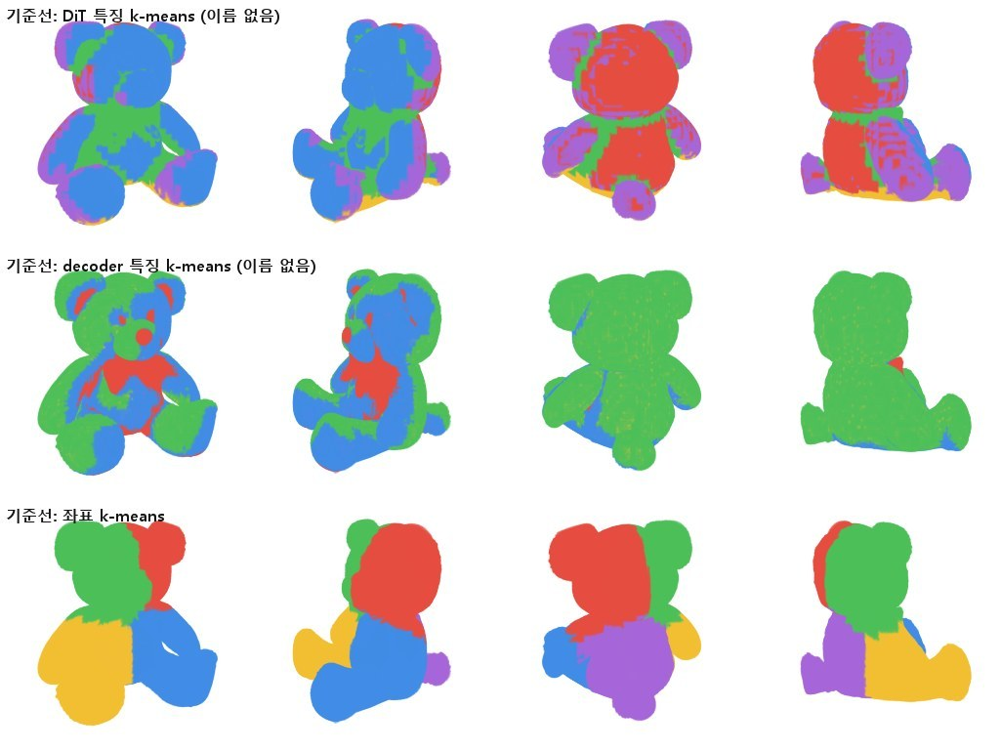
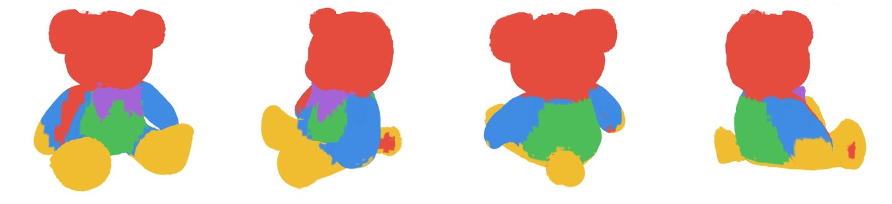
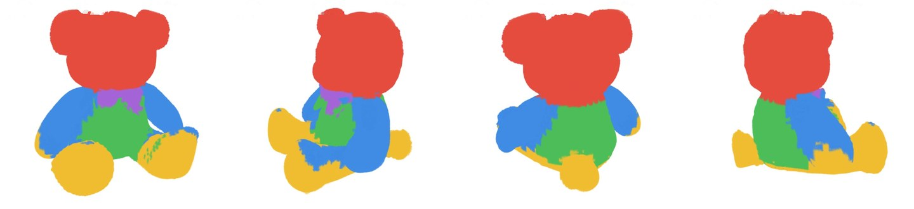
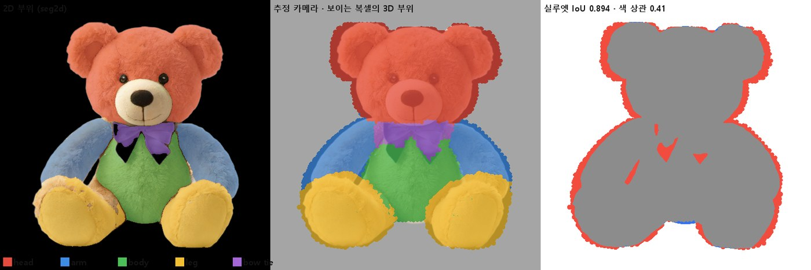
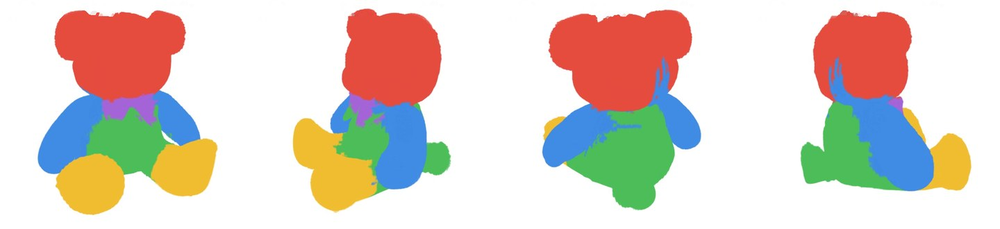
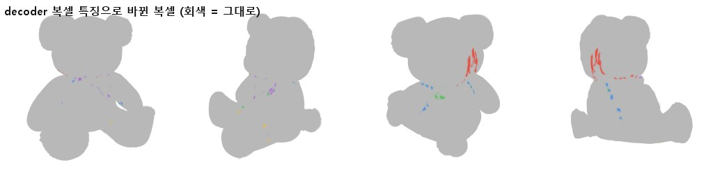

곰 인형
“a cute plush teddy bear toy sitting”
Graphics · 3D Representation · Generative 3D
3D 표현(볼륨 → NeRF → 3D Gaussian Splatting)의 내부 구조를 다뤄 온 그래픽스 연구자입니다. 렌더링만 되는 3D 를 구조를 가진 편집 가능한 표현으로 바꾸는 연구(APG-GS, IEEE CG&A 1저자 게재 확정)를 했고, 이번에 그 엔진을 생성형 3D 파이프라인에 연결했습니다.
텍스트 한 줄 → 이미지 → 3D Gaussians → 개수 조절(79만 → 10만, 화질 유지) → 구조 그래프 → 잡아당겨 편집. 생성 모델 안의 신호로 가우시안마다 부위도 붙인다.
가우시안을 점이 아닌 비등방 타원체로 보고 Bhattacharyya 겹침으로 구조를 복원, 변형 때 공분산까지 Σ′ = FΣ₀Fᵀ 로 갱신.
CUDA XPBD 솔버(1프레임 5.7 ms · 175 FPS), OpenGL 기반 3DGS 뷰어와 편집 결과 렌더링까지 구현.
| 필요 역량 | 근거 |
|---|---|
| 생성형 2D/3D | SDXL-Turbo(2D) · TRELLIS(3D, structured latent → Gaussian)를 로컬 GPU 에 직접 올려 파이프라인 구성, 출력 표현을 편집 엔진에 연결 → 데모 |
| Graphics 이론 | 3DGS 공분산·투영, 변형 기울기 F 추정과 Σ′ = FΣ₀Fᵀ, Bhattacharyya 거리, 볼륨 렌더링(ray marching · transfer function) → APG-GS |
| 실시간 3D 편집 도구 | SIBR(OpenGL) 뷰어에 가우시안 그래프 구축·변형·공분산 갱신 기능을 구현하고, 생성 결과를 같은 편집 파이프라인으로 연결 → APG-GS |
| Graphics API | OpenGL(의료 볼륨 렌더링, SIBR 뷰어), CUDA 커널 설계·최적화(워프 단위 gather, atomic 없는 결정적 누적) |
| AR 컨텐츠 저작 | 생성한 3D 를 만질 수 있는 에셋으로: 생성 → 정리 · 정렬 → 구조 그래프 → 변형을 스크립트 하나로 잇고, 가우시안마다 부위를 붙여 부위별 물성에 사용 → 부위 |
NEW · 생성형 3D 데모
생성 모델이 만든 3D 는 보기에는 완성돼 있지만, 가우시안끼리 관계가 없어 자연스럽게 고치거나 만질 수 없다. 이 데모는 생성 결과에 구조를 입혀 바로 편집 가능한 에셋으로 만든다.
“a cute plush teddy bear toy sitting”“a potted monstera plant with large leaves in a white ceramic pot”
“a cute cartoon guide robot mascot character standing”
TRELLIS 는 표면에 걸린 복셀마다 가우시안을 고정 32개씩 만들어 에셋당 47만~79만 개가 된다. 렌더링에는 괜찮지만 편집·물리에는 과하다. 중요도(불투명도 × 두 큰 축 곱) 상위 N 개만 남기면 구멍과 얼룩이 생기므로, 원본을 무작위 시점에서 렌더한 이미지를 정답으로 남은 가우시안의 위치 · 크기 · 회전 · 불투명도 · 색을 다시 맞췄다 (Adam, L1, 3000회, 에셋당 약 13 s).

물체 PSNR = 흰 배경을 빼고 물체 픽셀만 원본 렌더와 비교 (학습에 쓰지 않은 고정 8방향 평균). 원본은 TRELLIS 출력이므로 '원본을 얼마나 그대로 옮겼나' 를 잰 값이다.
| 에셋 | 10만 개 · 물체 PSNR 원본 대비 · 높을수록 같음 | 5만 개 · 물체 PSNR | XPBD 1스텝 (20회 반복) 낮을수록 빠름 | 그래프 준비 변환부터 그래프까지 | 위치만 vs Σ′ 갱신 평균 픽셀 차이 (0~255) | ||||||
|---|---|---|---|---|---|---|---|---|---|---|---|
| 잘라내기만 | 재최적화 | 잘라내기만 | 재최적화 | 원본 | 10만 | 5만 | 원본 | 10만 | 원본 | 10만 | |
| 곰 인형 정리 후 791,253개 | 24.5 dB | 49.0 dB | 20.9 dB | 45.8 dB | 97 ms | 18 ms | 10 ms | 66 s | 15 s | 0.08 | 0.18 |
| 화분 정리 후 308,076개 | 19.2 dB | 37.1 dB | 14.2 dB | 33.0 dB | 51 ms | 19 ms | 10 ms | 33 s | 15 s | 0.46 | 0.67 |
| 안내 로봇 캐릭터 정리 후 542,121개 | 21.4 dB | 43.4 dB | 16.1 dB | 36.0 dB | 49 ms | 17 ms | 9 ms | 52 s | 15 s | 0.18 | 0.25 |
RTX 4070 SUPER 12 GB 한 장에서 잰 값 (모두 측정 로그에서 읽음). 3D 생성 = TRELLIS 두 단계 샘플링(각 25스텝) + Gaussian 디코딩, 모델 로딩 제외.
| 에셋 | 3D 생성 TRELLIS 샘플링 | 최대 VRAM 3D 생성 | 생성된 가우시안 | 재최적화 → 10만 개 · 3000회 | 2배 넘게 늘어난 간선 10만 개 판 · 당긴 뒤 · 낮을수록 좋음 |
|---|---|---|---|---|---|
| 곰 인형 | 25 s | 5.9 GB | 794,944 | 13 s | 0% |
| 화분 | 21 s | 5.7 GB | 470,048 | 12 s | 0.003% |
| 안내 로봇 캐릭터 | 19 s | 5.8 GB | 655,936 | 13 s | 0.04% |
NEW · 생성 모델 내부 신호 → 가우시안 부위 → 부위별 물성
기하 그래프는 가우시안이 머리인지 팔인지 모른다. TRELLIS 는 3D 를 만들 때 입력 이미지의 어느 부분을 보는지(cross-attention)를 거치는데, 이 신호로 사진의 2D 부위 이름을 3D 로 옮겼다. 사진에 보이는 쪽은 입력 카메라를 추정해 그대로 투영하고, 가려진 쪽은 부피를 따라 채운 뒤, 경계는 복셀 특징 유사도로 다듬었다. 그 결과 모든 가우시안이 part_id 와 신뢰도를 가진다 (로봇 99,573개 전부 · PLY 속성으로 내보냄).
part_id 를 솔버에 넘기면 물성을 부위마다 다르게 줄 수 있다 — 여기서는 몸은 단단하게, 팔은 무르게. 두 로봇 모두 발만 받침에 고정한 한 덩어리 연체이고 모양 · 그래프 · 솔버가 같다. 오른쪽만 part_id 를 넘겨 부피 클러스터를 부위 안에서만 만들고, 형상 유지를 몸(머리 · 몸통 · 다리)과 두 팔로 나누고, 간선 강성을 경계에서 몸 → 팔로 매끄럽게 낮췄다. 받침을 좌우 ±2 cm · 2 Hz 로 2.4 s 흔든 뒤 멈춘다.
| 발만 고정한 로봇 흔들림 RMS (cm) · 받침 이동을 뺀 값 팔은 몸의 움직임까지 뺀 값 | 머리 | 몸통 | 팔 (몸 기준) | 경계 간선 1.5배 넘게 늘어난 비율 낮을수록 이음매가 자연스러움 |
|---|---|---|---|---|
| 기존 그래프 · 물성 하나 | 1.23 | 0.70 | 0.71 | 1.6% |
| 부피 · 형상 유지 · 강성 모두 부위별 (위 영상) | 1.28 | 0.65 | 0.65 | 13.4% |
| 부피 · 강성만 부위별, 형상 유지는 하나 몸 강성 0.6 · 형상 유지 0.15 | 1.17 | 0.53 | 미측정 | 0.5% |
형상 유지를 두 팔에 따로 주면 두 기준이 만나는 어깨 이음매가 늘어난다 (경계 간선 13%). 형상 유지를 하나로 두고 부피 · 강성만 부위별로 하면 몸통 흔들림이 0.70 → 0.53 cm, 경계 늘어남이 1.6 → 0.5% 로 줄었다. 팔은 아직 더 흔들리지 않는다: 좌우로 흔들면 힘이 옆으로 뻗은 팔의 길이 방향으로 들어가 팔이 휘지 않고, 보이는 움직임은 대부분 머리가 끄덕이는 것이다. 어느 부위를 단단 / 무르게 할지는 사람이 정했다.
좌표나 특징만으로 묶으면 이름 있는 부위가 나오지 않는다 (아래 기준선). 그래서 생성 모델이 사진의 어디를 보는지(attention)에서 출발했고, 털 질감이 고른 곰 인형에서 부위가 섞이는 문제를 네 단계로 고쳤다. 단계별 그림은 같은 곰을 정면 · 옆 · 뒤 · 반대 옆에서 본 것.






실제 곰에는 정답 라벨이 없어, 부위를 아는 합성 곰(구 · 타원체 · 캡슐로 만든 곰에 알려진 카메라로 2D 부위와 잡음 섞인 attention 을 만든 시험, tests/test_parts_core.py)으로 정확도를 쟀다.
| 합성 곰 · 부위 분류 정확도 정답과 같은 부위로 분류된 복셀의 비율 높을수록 좋음 | 표면 위치별 | 부위별 | ||
|---|---|---|---|---|
| 사진에 보이는 면 | 가려진 면 (옆 · 뒤) | 팔 | 몸통 | |
| 1차 · attention + 특징 전파 | 85% | 73% | 91% | 0% |
| 2차 · + 카메라 추정 · 보이는 복셀 투영 | 98% | 77% | 96% | 25% |
| 3차 · + 가려진 쪽은 부피 기준 | 98% | 85% | 98% | 48% |
| 4차 · + 특징 유사도 경계 보정 | 98% | 87% | 99% | 52% |
몸통은 사진에서 배에만 라벨이 있어 가장 어렵다. 4차의 향상(전체 88.57 → 90.26%, 부위 경계 복셀 76.25 → 79.95%)은 대표 특징 투표에서 나온다 — 같은 단계를 DiT 특징으로 돌려도 거의 같았고(90.22%, 79.89%), 실제 곰의 뒷머리도 똑같이 머리로 돌아왔다. decoder 특징은 바뀌는 범위가 더 좁을 뿐(305 vs 492 복셀) 더 정확하다는 근거는 아직 없다.
열: 정면 · 옆 · 뒤 · 반대 옆. 행: 원래 색 · attention 투표만 · 1차 · 2차의 투영 (사진에 보이는 복셀만, 회색 = 모름) · 4차 최종. 방법은 곰에서 다듬었고, 로봇에는 완성된 4차 방법을 그대로 적용했다 (추정 카메라의 실루엣 일치 0.85).


선행 연구 · IEEE Computer Graphics and Applications 1저자 (게재 확정)
원본 3DGS 의 가우시안은 서로 관계가 없는 독립 primitive 라, 한 곳을 움직이면 나머지가 따라오지 않는다. 가우시안 사이의 구조를 복원하고, 그 위에서 변형을 풀고, 렌더링 공분산까지 함께 바꾼다.
KD-tree 로 후보를 찾고, 두 공분산 타원체의 Bhattacharyya 거리로 겹침을 점수화해 강한 겹침만 연결. 중심 거리 · 방향 · 크기를 손으로 따로 가중할 필요가 줄어든다.
DB = ⅛ dᵀ Σ̄⁻¹ d + ½ ln( det Σ̄ / √(det Σᵢ det Σⱼ) ), Σ̄ = ½(Σᵢ + Σⱼ)
거리 · 부피 제약을 GPU 에서 병렬로 푼다. 부피 제약을 atomic 없는 gather + 클러스터당 1워프로 바꿔 47.5 → 21.5 ms (2.21배), 워프 덕분에 가능해진 설정으로 20.0 → 5.7 ms (175 FPS). 1프레임 시간, 짧을수록 좋음.
이웃 변위로 국소 변형 기울기 F 를 추정(polar 분해로 회전 · 늘어남 분리)해 가우시안의 방향과 크기도 갱신. 중심만 옮기면 늘어난 면이 찢어진다. 비용 0.4 ms · 프레임의 약 2%.


연구 흐름
다음 연구
지금은 생성이 끝난 뒤 모델 안의 신호로 부위를 꺼낸다. 다음은 생성 단계에서 부위와 재질(물성)까지 함께 내놓아 바로 물리에 쓰이는 표현.
생성 가우시안의 개수 · 크기를 용도(렌더 / 물리 / 모바일 AR)에 맞게 조절하는 표현과 LOD.
텍스트 · 스케치 · 드래그로 공간 컨텐츠를 만들고 고치는 도구 — 실제 공간 스캔과 생성 에셋을 한 장면에서.